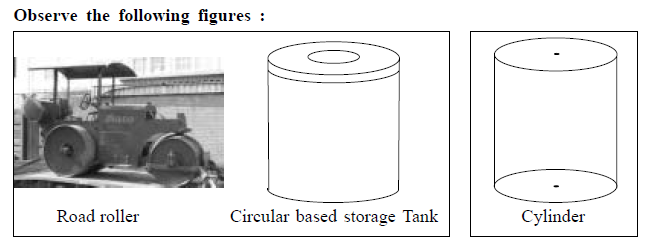
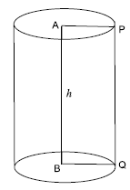
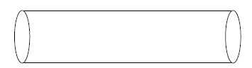
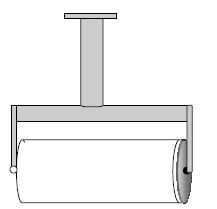
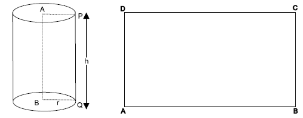

| Home | |
| SEARCH |
MensurationCylinder Wheels of a road roller, a circular based storage tank etc will suggest you, the concept of a right circular cylinder. 1. The right circular cylinder A right circular cylinder is a solid described by revolution of a rectangle about one of its sides which remains fixed. AP = Radius of the circular plane AB = Axis of the cylinder PQ = Height of the cylinder Features of a right circular cylinder 1) A right circular cylinder has two plane surfaces, circular in shape. 2) The curved surface joining the plane surfaces is the lateral surface of the cylinder. 3) The two circular planes are parallel to each other and also congruent. 5) All the points on the lateral surface of the right circular cylinder are equidistant from 6) Radius of circular plane is the radius of the cylinder. Two types of cylinders : 1. Hollow cylinder and 2. Solid cylinder A hollow cylinder is formed by the lateral surface only. Example : A pipe A solid cylinder is the region bounded by two circular plane surfaces and also the lateral surface. Example : A garden roller 2. Surface area of a right circular cylinderA. Lateral Surface area : Activity : 1. Take a strip of paper having width equal to the height of the cylinder. 2. Wrap the strip around the lateral surface of the cylinder and cut the overlapping strip along the vertical line. (say PQ) 3. You will get a rectangular paper cutting which exactly covers the lateral surface
4. Area of the rectangle is equal to the area of the curved surface of the cylinder. |